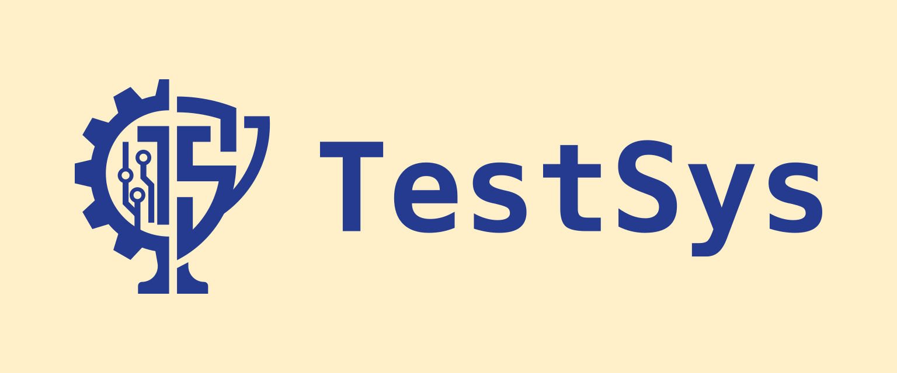
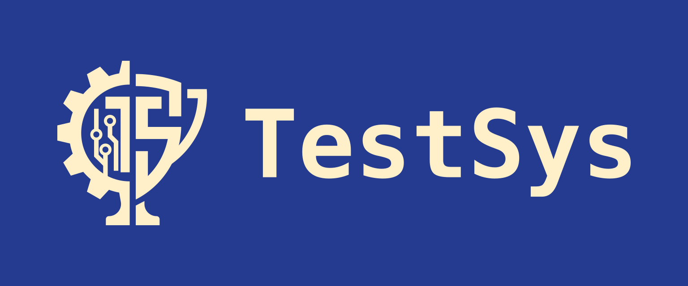
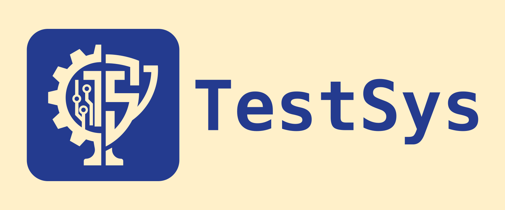
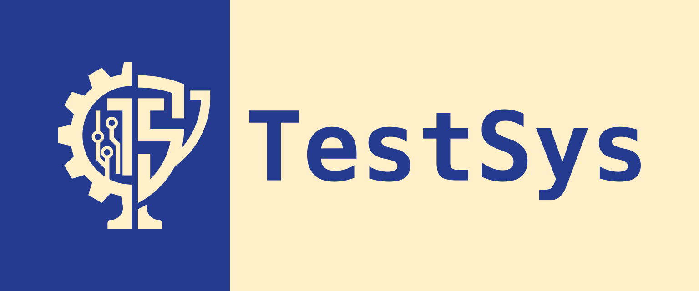
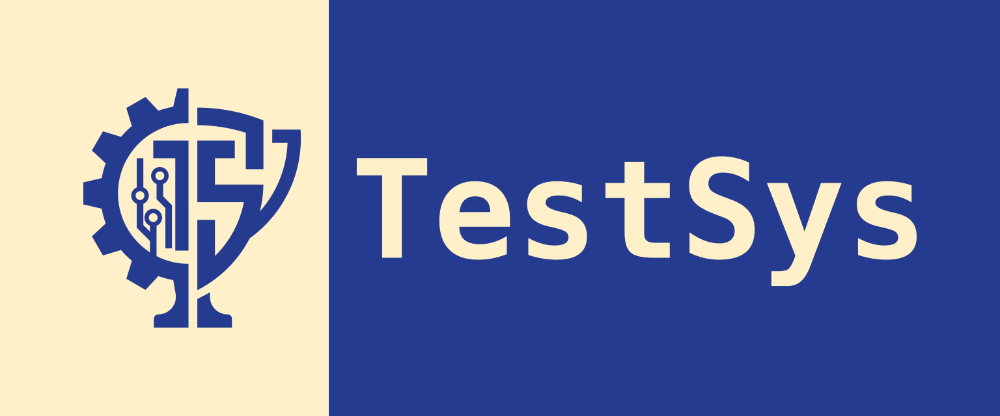
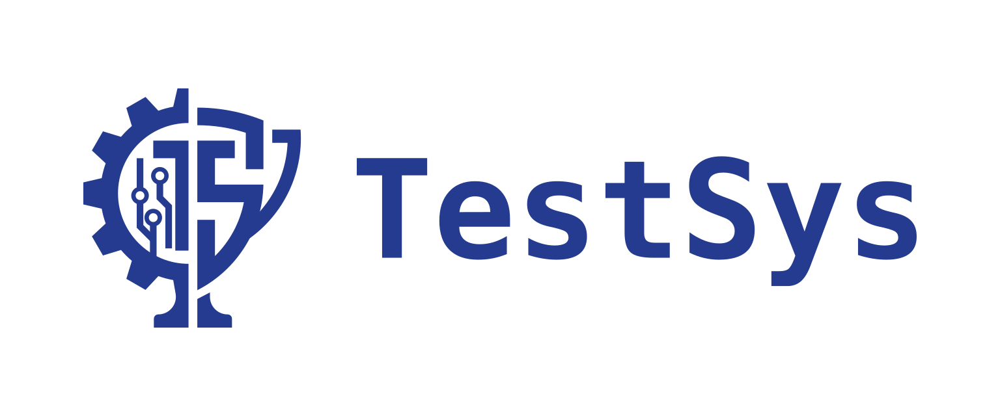

В левом верхнем углу используется единое изображение TestSys-mono-horizontal-large-type-05-split-cream.png: эмблема слева, надпись справа. Высота — 40 px, исходные пропорции 2816:720 сохранены; углы скруглены токеном radius-md. Сам PNG не изменен. Палитра остальных компонентов остается прежней.
Favicon — синяя эмблема без текста на мягком основном фоне #FFF0C9. Углы скруглены в самом SVG, поэтому скругление видно и во вкладке браузера.





